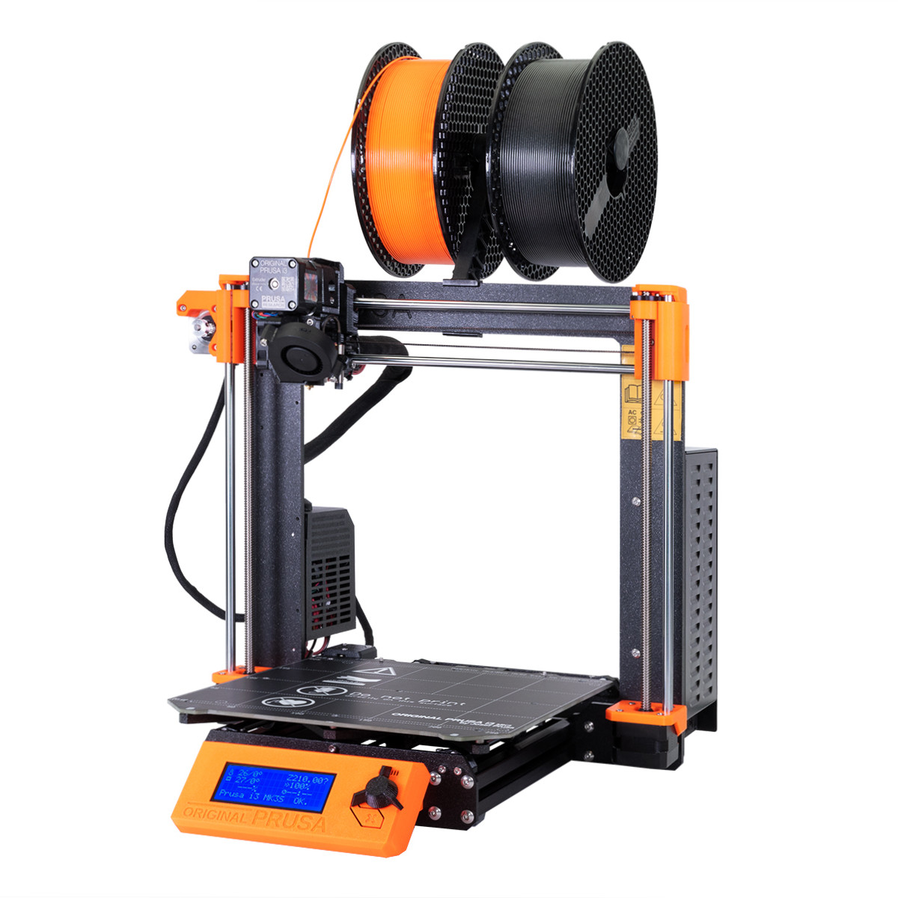

This is me.
Choose a 3D printer and determine with tests the design rules/constraints. Document the project on a common website to which every group member can link to.
This group project was done by Guðjón Hrafn Þórarinsson, Sara Rós Alfreðsdóttir and Stefán Rafn Gunnarsson.
We started by choosing a 3D printer. There are five different 3D printers available at Fablab and the one we chose is a Prusa i3 MK3S.
The Original Prusa I3 MK3S+ is the successor of the award-winning Original Prusa i3 MK2 3D printer. With the rebuilt extruder, a plethora of sensors and the new magnetic MK52 heatbed with replaceable PEI spring steel print. It features a 24" x 12" (608 x 304 mm) work area and high-speed servo motors. You can create products quickly and easily with the laser system.
To be able to determine the accuracty of the printer ,and thus the design constraints, we have to do a print a design that focuses on minimal lines, overhangs, sharpness and curvature.We used a test print that is used all over the world for all printers. Here is a link to the downloadable design that can be seen on the photos below.
We can see that the model has two big overhangs one starting at 15° going to 75° taking four 15° steps and the second one starting at 10° going to 80° with seven 10° steps. When this is printed we will be able to see how the plastic is affected by the fact that it's hanging without any support. We can also notice that bridging, stringing, sharp corners, scale/diameter and tolerance is tested.
Testing all of these properties individually is important to be able to define the limits of the 3D printer. Knowing each and every thickness of every line of the design will give us the capability of measuring the printed model and defining where the limits lay. Some of the thin lines will be too thick, a part of the hangover will have leakage due to gravity and some parts might have too much stringyness between them.
To print the design we tranferred the design in to Cura Ultimaker which is the world's most popular 3D printing software. There we only have to choose the printer we are using and then we slice the object. After doing this the object is ready to print. We transferred the file on to a SD card and then put the card into the printer. It took 2 hours and 7 minutes to print.
Looking at the overall print it looks good. There are minimal defects, almost no strining, the bridging looks close to perfect, the circles are good and the pyramids are just like they are designed.
When we take a closer look at the tolerance test we can notice how there is a lot of smudging when the gap becomes smaller than 0.3mm. With every step taken after that it becomes worse. We can also notice how the printer didn't print all of the lines on the right side of the tolerance test due to them being too thin.
Looking at the bridging test we see that when the bridge gets shorter there is less infill, but the shortest bridge has holes in the bar. Therefore if we have a bridge in our design we should keep it longer than at least 5mm.
Looking at the overhang we can notice that the printed plastic is quite alright at 20° but going above that the plastic starts spilling down due to gravity, the bottom layer of the overhang doesn't harden correctly.
Now that we have studied the test print we can define our own models in a way that prints well.
From the bridging test we learned that bridges should be at least 5mm.
Looking at the hangover we can notice that it can look terrible to have a hangover at 50-80°, because the plastic leaks while it's still warm due to gravity. It's not perfect at 20-50° either so if we want a good finish on our prints we should keep it below 20°.
From the tolerance test we learned that the thickness of the lines and gaps should be at least 0.3mm thick.
Taking this information with us into our own 3D printing projects will ensure us of a good finish.
We all worked well together for this project. As this was a minimal project it didn't take much time however it taught us a lot.
The time was divided into printing, measuring, calculating and coding.
This is me.

This is a bridge.

Circular windows on a spherical building.
If there are any questions please contact me via email, phone or doves.